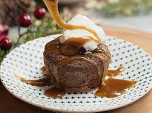

Sticky Toffee Pudding

Indulgent Sticky Toffee Pudding
One of our most requested recipes!Let's be honest, puddings don't get
any better than this.
Ingredients
- 225g whole medjool dates
- 175ml boiling water
- 1 tsp vanilla extract
- 175g self raising flour, plus extra for greasing
- 1 tsp bicarbonate of soda
Steps
- Stone and chop 225g medjool dates quite small, put them in a bowl, then pour over boiling water
- Leave for about 30 mins until cool and well-soaked, then mash a bit with a fork
- Butter and flour seven mini pudding tins (each about 200ml/7fl oz) and sit them on a baking sheet
- Beat 85g softened butter and 140g demerara sugar
- Add the eggs a little at a time